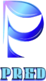

PRED24/7 market event intelligence for tokenized U.S. equities. PRED detects when a tokenized stock moves abnormally while Wall Street is closed, investigates why, tracks competing explanations until the evidence settles them, estimates the reaction, and learns from every outcome.
Tokenized U.S. equities now trade around the clock on Bitget, while the underlying U.S. market is open for 6.5 hours a day. In the remaining 17.5 hours, and all weekend, prices can react to information before any headline, filing or analyst note explains it. We call such a move a Ghost Event. PRED is a live system that watches Bitget's tokenized-equity markets continuously and opens a Ghost Event only when three conditions hold at once. It then runs an evidence pipeline over public sources (SEC EDGAR filings, news and related-asset behaviour), maintains a transparent probability model over six competing catalyst categories, and resolves each event against authoritative evidence or observed price behaviour. It estimates the reaction into the next U.S. close from comparable past events, and scores itself on every outcome. PRED never fabricates data, never presents a model estimate as a certainty, and never trades on its own. An optional execution layer lets a human act on PRED's intelligence through Bitget, with explicit approval for every order.
A U.S. stock that trades only in the regular session cannot react to overnight information until 9:30 a.m. ET. Its tokenized counterpart can react at 2 a.m. That creates a new, observable phenomenon: a tokenized equity moves abnormally while its home market is closed, and for minutes or hours there is no public explanation.
PRED targets the gap between the move and the explanation. It doesn't try to predict prices from nothing. It finds moves that already happened while Wall Street slept, works out what could explain them, and says honestly how sure it is.
A Ghost Event is opened only when all three conditions hold. An abnormal move that fails any of them is logged as "not a Ghost Event" with the reason, and nothing is opened.
PRED is a single Node.js 22 service with no runtime dependencies. It uses the built-in node:sqlite for persistence and Server-Sent Events for the live dashboard. Six agents (Detector, Investigator, Hypothesis, Verifier, Reaction, Memory) are orchestrated by an engine that writes an append-only audit trail for every event. Three independent loops run continuously:
| Loop | Default cadence | Work |
|---|---|---|
| Market poll | 15 s | All tickers in one request per category, plus the 1-minute candles that are due (batch size adapts to the number of tracked assets) |
| Detector | 30 s | Evaluates every monitored instrument and progresses open events through verification |
| Asset discovery | 15 min | Re-discovers Bitget's tokenized-equity universe from instrument metadata |
PRED uses Bitget's public Unified API v3: /api/v3/market/instruments, /tickers, /candles and /orderbook. Tokenized equities are discovered, never assumed. Spot instruments flagged isRwa and USDT-margined perpetuals with symbolType: "stock" are parsed into their underlying ticker, then matched against SEC EDGAR's registrant list. PRED only reasons about U.S.-listed names, because its Ghost Event definition depends on U.S. market hours. Commodities, FX, and Hong Kong, Korean and Japanese listings are listed but not monitored.
Production figures observed on the live deployment, September 2026.
| Source | What PRED records | Safeguards |
|---|---|---|
| SEC EDGAR | Material filings (8-K, 6-K, 10-Q/K, 13D/G, Form 4, S-3, 424B5, 425): form, items, acceptance time, URL | Declared User-Agent, ≤ 6 req/s, de-duplication by accession number |
| GDELT DOC 2.0 | Headlines, publisher domain, publication time, matched entities, relevance | 15-min cache, no retry into a 429, exponential backoff |
| Google News RSS | Same fields; automatic backup when GDELT is paused or blocking the host | Same cache and backoff; every item marked with its provider |
| Bitget itself | Peer moves, sibling issuer tokens, BTC/ETH, market-wide breadth, spread, follow-through or reversal | Only instruments Bitget actually lists |
| Calendar | Scheduled events you maintain (earnings, etc.) | Labeled SCHEDULED, never treated as an observed catalyst |
For each instrument, PRED compares the last 5 one-minute bars against a 120-bar baseline:
These guards come from production experience:
Every Ghost Event carries a probability distribution over six catalyst categories:
| Category | Prior (log-odds) | Typical supporting evidence |
|---|---|---|
| Company-specific catalyst | 0 | Move not explained by peers; filings; company-named headlines |
| Sector-wide repricing | 0 | Related companies moving together |
| Macro / market-wide flow | −0.5 | Broad tokenized-equity breadth; BTC/ETH moves |
| Liquidity anomaly | −0.2 | Wide spreads, reversal, no news |
| Scheduled event pre-positioning | −1.5 | A calendar entry close to the move |
| Unknown / unexplained | +0.3 | Absence of evidence |
Each hypothesis shows the evidence for and against it, with weights and sources, the number of independent sources, its change since the previous revision, and a "why N%" breakdown. Revisions are append-only, so earlier reasoning is never overwritten. The numbers are model confidence estimates. PRED says so wherever they appear, and calibrates them against outcomes in PRED Memory.
PRED never forces a confirmation. An event resolves in one of three ways:
When a catalyst is confirmed, or the leading hypothesis reaches 70%, the Reaction agent estimates the move from the prediction time to the first U.S. regular-session close. It finds comparable past events in PRED Memory (same direction, similar size and volume profile, same catalyst category), weights them by similarity, and reports the weighted 20th/50th/80th percentiles as a range with a confidence score. If fewer than three comparable events with known outcomes exist, it reports "Insufficient live history" instead of producing a number. Live memory starts at zero, so early reaction estimates are deliberately absent or labelled LOW CONFIDENCE.
At the U.S. close after each event, PRED measures the actual reaction and scores itself:
It also tracks how well its stated confidence matches reality (a reliability curve and a Brier score) and tags each failure mode. These records feed the next reaction estimates. The track record is live-only: nothing synthetic is ever mixed into it. The separately labelled demo uses its own simulated memory.
A language model (Claude, or a Groq-hosted open model on the free tier) can write the plain-English explanation of the leading hypothesis. It sees only the evidence PRED collected, must cite evidence IDs, and is instructed never to invent facts or numbers. It never sets prices, probabilities, confirmations or trade decisions. Those come from the transparent model above. If the model is unavailable or rate-limited, PRED uses a deterministic template, so the system never depends on an LLM to function.
PRED is an intelligence layer, not a trading bot. For an operator who wants to act on a Ghost Event, PRED includes an execution layer on Bitget's Unified Trading API (POST /api/v3/trade/place-order). It is built so that no agent, background job, stream or webhook can place an order:
BUY 0.12 NVDAUSDT).Status. Human-approved execution through Bitget’s API is built and tested against a simulated Bitget, and disabled by default. Every order needs explicit human approval, fresh price and balance checks, and cannot be placed twice. Agents cannot trade.
null and shown as n/a. The simulated demo is isolated and labelled SIMULATED everywhere.PRED provides market intelligence, not investment advice. Probabilities are model estimates. Tokenized equities and derivatives carry significant risk.